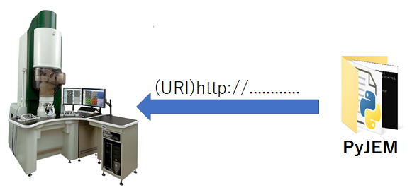

Introduction¶
Summary¶
Environment¶
OS¶
Windows® 7 64bit
Windows® 10 64bit
Windows® 11 64bit
Python version¶
Python 3.5 64bit
Python 3.7 64bit
Python 3.8 64bit
Python 3.9 64bit
Python 3.10 64bit
Relative library¶
opencv-python
httplib2
comtypes
Functions¶
You can use the existing TEM External(TEM3) published by JEOL and control the detector. Below is an example of the functionality.
Electronic optical system control¶
Beam control
magnification change
brightness change
etc..
Stage control¶
Absolute position movement
Relative position movement
Piezoelectric movement
etc..
detector control¶
capture image by JEOL camera and STEM detector.
hardware insert / retract.
change mage storage type
Change of imaging conditions
etc..
Auto function¶
Call functions available in the TEM Center.
Auto Focus
Auto Contrast Brightness
Auto Stigmator
etc..
Connection model¶
You can use Python environment on TEM PC or another PC and use it on PC which installed PyJEM (python library). When you execute the script code including PyJEM, processing is thrown to TEM main unit via TEMCenter.

TEMPC¶
The figure below shows the communication model when PyJEM is on the TEMPC. Since the communication is between the same, the IP address will be 127.0.0.1.
RemotePC¶
It is a model that builds a PyJEM environment on a PC other than TEMPC and controls TEM. It is possible to write python script code with NotePC (etc.) and execute it with Remote. When executing from a remote place, work such as having the TEM connected to the in-house LAN etc. may be necessary.
Forum (Message Board)¶
Publish the sharing place(Forum) about PyJEM to GitHub. To use Forum, you need a GitHub account. In this Forum, you can share script code, exchange information, and browse. From JEOL, we will publish manuals such as how to use PyJEM and answer questions about PyJEM.
PyJEM Forum URL： PyJEM Forum